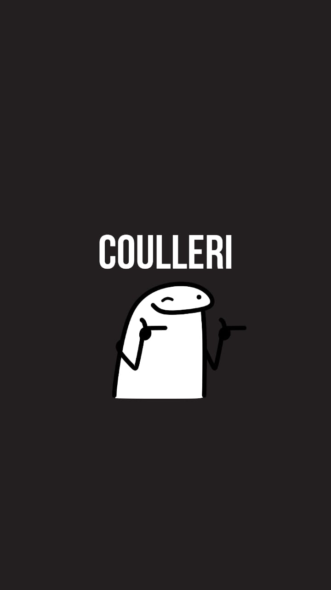
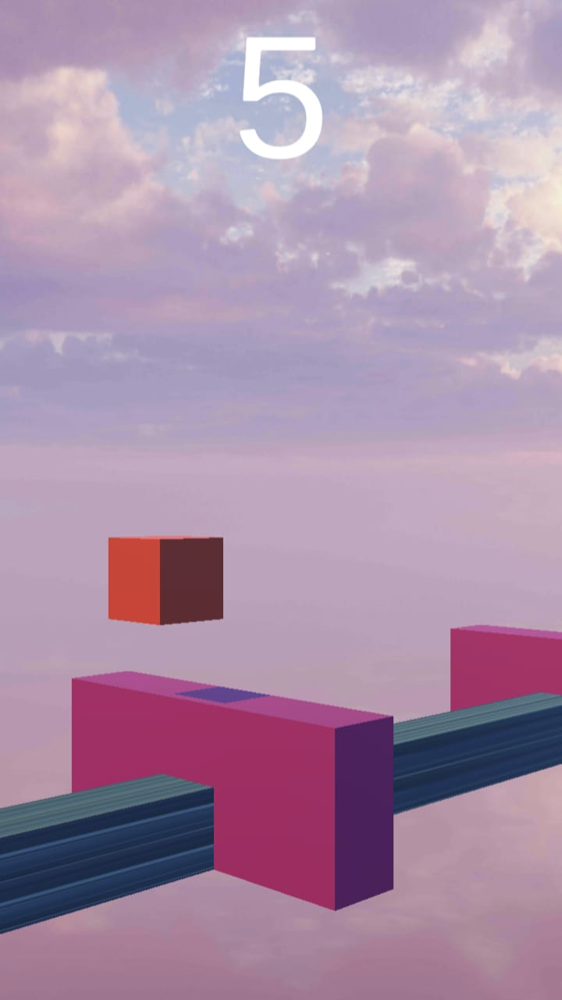

¡Bienvenidos a Just Run 2D!
En este juego tendrás que correr y saltar para llegar al final de cada nivel. ¿Estás listo para el desafío?
Fotos


Trailer
Puedes descargar Just Run 2D solo para dispositivos moviles
Descargar